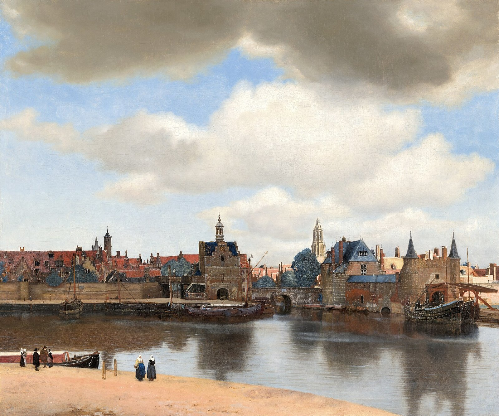
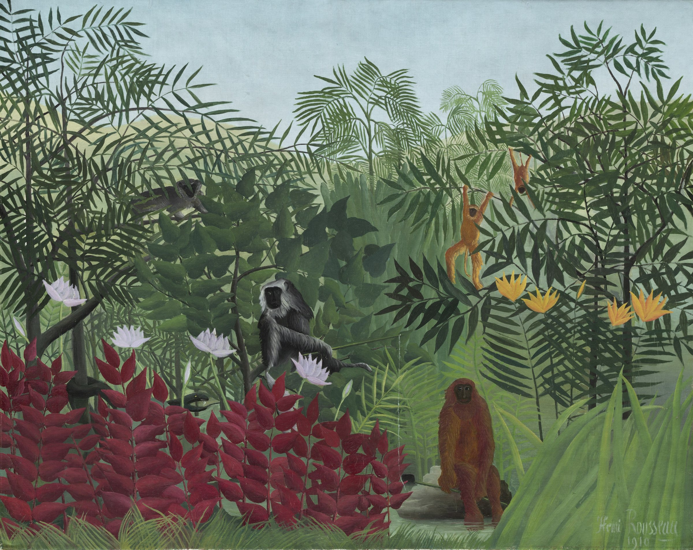

The New Life: Florence
follow Beatrice to the Arno, after Henry Holiday and Rossetti
The New Life: Florence
follow Beatrice to the Arno, after Henry Holiday and Rossetti
 The Girl in Delft: one street
the rebuild: chase a magpie through Delft, after Johannes Vermeer
The Girl in Delft: one street
the rebuild: chase a magpie through Delft, after Johannes Vermeer

The Girl in Delft Delft about 1665, inside the paintings of Johannes Vermeer The Night Road: one street
the rebuild: a chase down one street of Åsgårdstrand, after Edvard Munch
The Night Road: one street
the rebuild: a chase down one street of Åsgårdstrand, after Edvard Munch
 The Night Road
Åsgårdstrand in the 1890s, inside the paintings of Edvard Munch
The Night Road
Åsgårdstrand in the 1890s, inside the paintings of Edvard Munch

Five Monkeys inside a painting by Henri Rousseau Sunday on the Island
inside a painting by Georges Seurat
Sunday on the Island
inside a painting by Georges Seurat